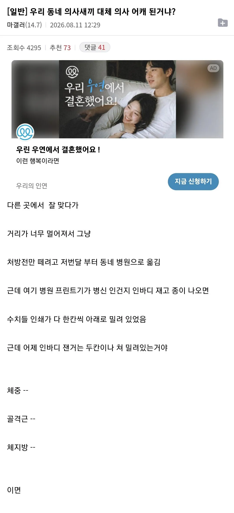
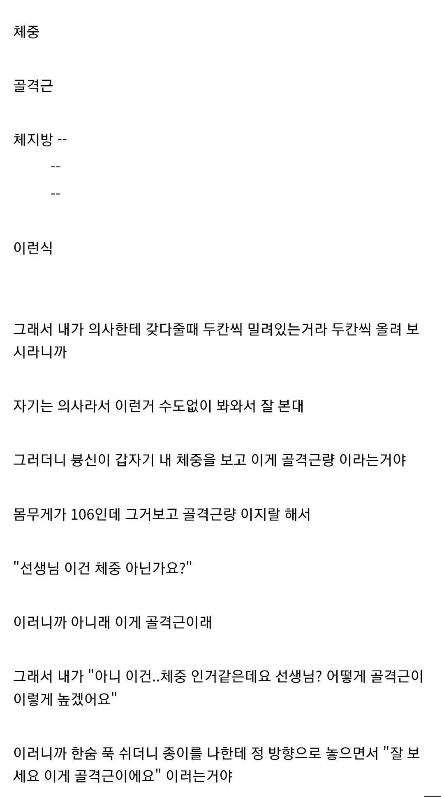
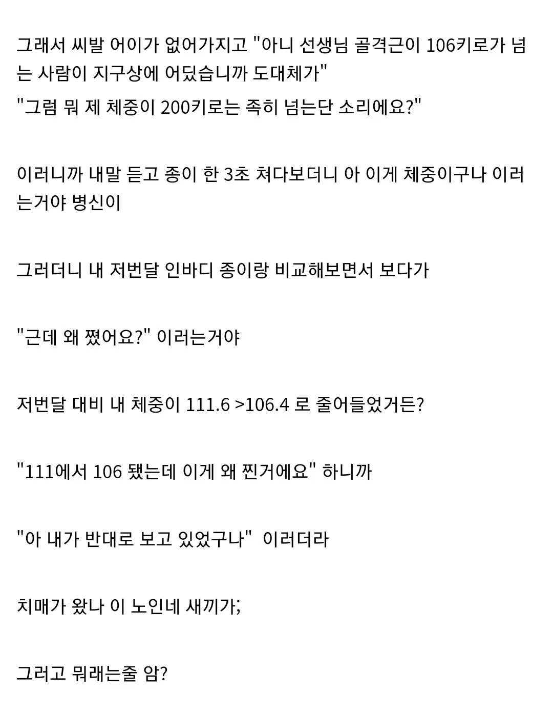
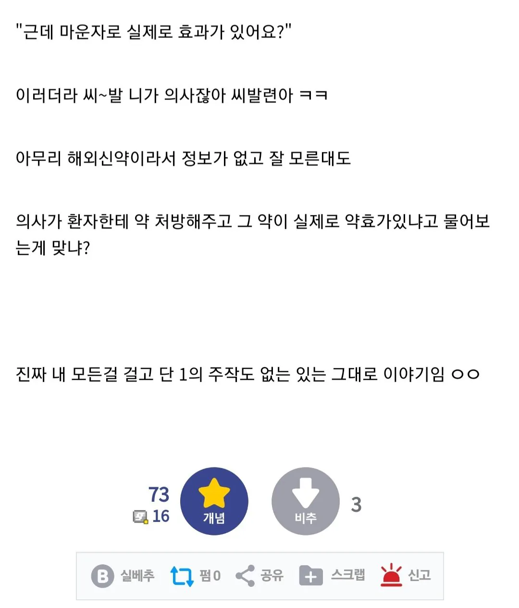
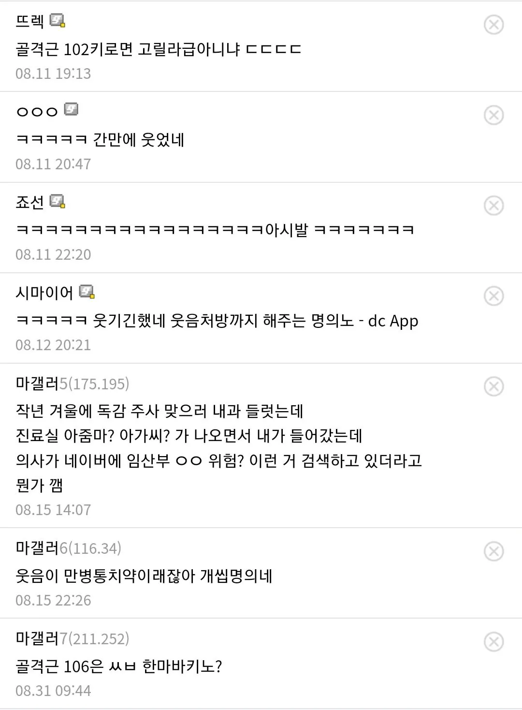

ㅋㅋㅋㅋㅋ





ㅋㅋㅋㅋㅋ
인터넷 없을때는 미달나는 의대 알음알음 전달받아서 들어가고 했다. 기득권은 항상 뒷구멍을 만들어놓음. 음서부터 시작된 유구한 전통. 최근까지는 의전원
진짜 씨발 의원 ㅋㅋㅋ
조금만 더 근육을 키우면 언체인이 될수 있을듯
ㅋㅋㅋ 진료실 만담 ㅋㅋㅋ
내 남자친구 일하다가 손목 다쳐서 병원 갔는데 의사가 엑스레이 찍은거 구글에서 이미지검색해서 말해줌 .. 머고???? 진짜 머 다 대역이라도 가져다앉히나?
제목만 보고 또또또 부활하러 병원가는 병신이 헛소리하네 생각했는데 왜 진짜 의사가 멍청한거임 ㅋㅋㅋㅋ
100키로 골격은 있긴함 근데?
아니 엥간하면 환자 헛소린가 하는데 의사가 좀 띨하네 ㅋㅋㅋㅋ
그저 의 주 빈
ㅋㅋㅋㅋㅋ시발 만갤럼임?ㅋㅋㅋㅋㅋㅋ
역도나 스트롱맨 나가면 지구최강 되겠네 ㅋㅋㅋ
헐크 스매쉬! 하고 냅다 쳐버리지 그랬냐ㅋㅋㅋㅋ
ㅋㅋㅋㅋㅋㅋㅋㅋㅋㅋㅋㅋㅋㅋㅋㅋ 개웃기네
인바디 세팅에 인쇄 위치 보정 기능 있는데 그것조차 만져본 적 없는갑다 ㅠㅠ